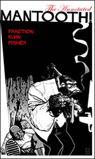

I borrowed The Annotated Mantooth by Matt Fraction from Hizzy-Dizzy over the weekend. Finished it today at lunch. It’s like this explosion of kicking, nonsense, lesbians and gorilla super-spies. And it’s annotated by Matt Fraction himself, whose wit is as keen as… oh, what the hell am I talking about? The man got three stories about a super-spy gorilla published, all of which where named “Kick; Splode; _fill in what gets kicked and ‘sploded here_”. I think that’s all you really need to know. Kick; Splode; Interview; Column;
Also borrowed Fortune & Glory by Brian Michael Bendis. I had previously borrowed Torso (also by Bendis), and was smitten with his writing and art all together, so anything else of his I could read, I would. Fortune & Glory is about his failed attempt to get his book “Goldfish” turned into a movie. For I, who am ignorant of the whole process by which a good book or idea gets turned into a steaming celluloid pantload, Bendis’ account of his travails read oddly like Torso — what will happen next? Oh my! Heh. Painfully funny, it was. Sample pages from Fortune & Glory: page 1, page 2. Review of F&G at The Onion AV Club
¨
Ok, so here we are, the United States of America. We agreed a long time ago that we should keep our politics and our faith separate issues, after all, when a government (or a king, or a dictator) sponsors a religion of any sort folks of other religions are certainly not done any big favors. Remember why a good chunk of the founders of the US escaped Britain? Well, anyway, our government is urging “‘mericans” to pray during this “testing time”.
¨
get thee to The Matrix to see The Animatrix Episode 1. I love stories that are deep and boundless, and the Wachowski’s (sp?) have really outdone themselves…
¨
Who is this actor, Elmer Grandin, you ask? Elmer Grandin, born in 1861 appeared in Broadway musicals and some silent westerns. However, a couple roles they forgot to mention:
4. Josh McKay’s Kegger (2002) …. Darth Vader
5. Jessica Wess’s Seance (2002) …. Darth Vader
Thanks to tha’ H-Dog for the link.
¨
When I first saw this photo, I didn’t know what that gizmo was, but somehow I knew that I wanted it. Well, turns out it is a bosom phone. No wonder!
¨
finally got around to putting up a couple of galleries from the past week.
piano – my plan (codenamed: “find-kelly-a-piano”) has succeeded! $50 for the piano + moving and tuning fees (5 times what the piano cost), and we now have a piano! It’s a 1908 Vose & Sons upright piano. It’s got a pair of broken hammers, but the fine folks at Camelot Piano Center (who moved it) will have them back when we get it tuned.
mochi! – at the local Wild Oats we found some ‘mochi’ (or ‘omochi’, as Gary sez in Japanese), which is some tasty rice-pudding-pounded-flat-and-you-can-bake-it sort of stuff. Yummy! Just like a good, chewy cinnamon raisin bread.
art at work – some crap attempts by myself to get some good desktop backgrounds.
¨
Legendary “wall of sound” producer Phil Spector is having a rough time of it lately — first ‘Let It Be’ is going to be de-Spectored and now he’s shooting people!
Also in other weirdness — apparently NASA has some OTHER shuttle called Columbia that can travel BACK-IN-TIME! At least that is what CNN tells me, and who am I to doubt them? (photo ripped off from Greg Leffler’s Musings)
¨
It’s not like I’m paying for the bandwidth that thelocust[dot]org currently utilizes, but now that web-space is plentiful and most people have a general understanding of how the intarweb works, there is no reason to link to an image like such
>img src=”https://thelocust.org/images/whatever.jpg”<
Just right-click, download the image and post it on your own site! Otherwise, the people who host that image (played in this production by me) could change that image to whatever they want, and thusly your website (played by reres.com in this production) may end up looking like this, or perhaps this, or even this.
Comedy ensues when the images you are linking to are used in a certain javascript snow toy. Clicky on the puking frat-boy to be admonished! Ha!
Well, after I posted that trogdor image I captured, it seemed that a number of gaming-related messageboard denizens had picked it up. Ooh, it’s fun for about five minutes to fool with these clownshoes, so then I decided to employ Apache‘s mod_rewrite to replace any outside-linked images with this image. All you have to do is place a file called .htaccess in the directory with the images. Inside the .htacces file put:
RewriteEngine On
RewriteCond %{HTTP_REFERER} !^$
RewriteCond %{HTTP_REFERER} !^https://thelocust.org/.*$ [NC]
RewriteCond %{HTTP_REFERER} !^http://www.thelocust.org/.*$ [NC]
RewriteCond %{HTTP_REFERER} !^http://stats.thelocust.org/.*$ [NC]
RewriteRule .*\.(png|PNG|gif|GIF|jpg|JPG)$ https://thelocust.org/404s/heyjackhole.jpg [R]
Simple, eh? An example of this in use: clicky example
¨
Eve, girlfriend of Hunter has recently updated her site! It’s all cool and clean and such! Maybe I just haven’t checked it in a while — who knows! In any case, I like the clean design, and you can’t go wrong with the autobio-photograph. (yeah, i don’t think it’s a word, but consult your latin roots).
¨
Holly brought over some tasty Vegan Chili last night — it was scrum-diddly-umptious!
I Can’t Believe this is Vegan Chili
from Holly B.
Ingredients:
2 cans of beans (I used one can black, one can chili)
2 cans of diced tomatoes (one can was seasoned with garlic and green peppers)
1 can of sweet corn
Do not drain any of the cans
Half/package of veggie grillers (you can do it with less, but I wouldn’t add more–too gassy!) :)
1/4 of an onion (non-sweet)
3 dashes of salt
dried, crushed basil to taste
4 dashes garlic powder
one packet chili seasoning (I used vegetarian chili seasoning, found it at Wild Oats)
2 dashes cracked pepper
2 dashes lemon pepper
2 dashes ground pepper
Combine everything in a pot and cook on medium high heat, until hot
Reduce heat to medium and let simmer for 10-15 minutes, stirring occasionally
Remove from heat
Add 1/2 cup of Minute Rice, or already cooked rice. Minute Rice must sit in chili for about 10 minutes before being edible.
Add water if Rice absorbs too much liquid. Heat as needed.
Serve and enjoy! :)
¨


{kind=link}
{kind=link}
{kind=link}
{kind=link}
{kind=link}
{kind=link}